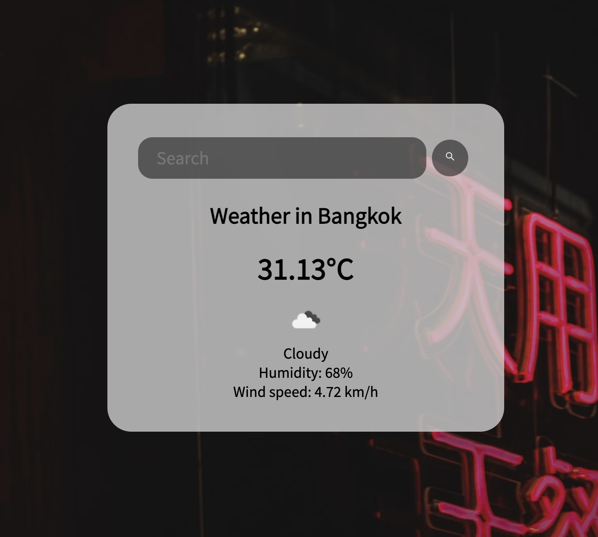

By using HTML, CSS, JavaScript
A weather app that indicates each city/region's weathers
and its conditions after the city/region name has been typed into the searchbox
and displays with the city venues or scenes as a background.
See the Pen Weather App by Aung Kyaw Kyaw Alax (@aung-kyaw-kyaw-alax) on CodePen.
Used CSS (flexbox) to create a responsive, centered card, and then access APIs using JavaScript's 'fetch()' method, and dynamically modify content on the page and background images that sourced by freely usable images from "Unsplash".
• Applied a SVG element for a "Search" button with a magnifying glass icon.
• Google-Fonts and CSS (flexbox) properties has applied and displayed and background images are linked and displayed with the source of "Unsplash" website.
• By using JavaScript's 'fetch()' method, the weather info have fetched via "openweatheramap.org".
• The "openweatheramap.org" API key has linked and extension "JASON_Viewer" has used in Chrome browser for viewing fetched data.
• Then, displayed the fetched weather info for each city/region with weather icons source linked with "openweatheramap.org" website.
• As a default, the "Bangkok" city/region's weather data is displayed.
• With "Unsplash" image source linked and JavaScript's function for displaying background images.
• Once user types city/region names into searchbox and hits enter, the page will reload with JavaScript method and typed city/region images will display accordingly.